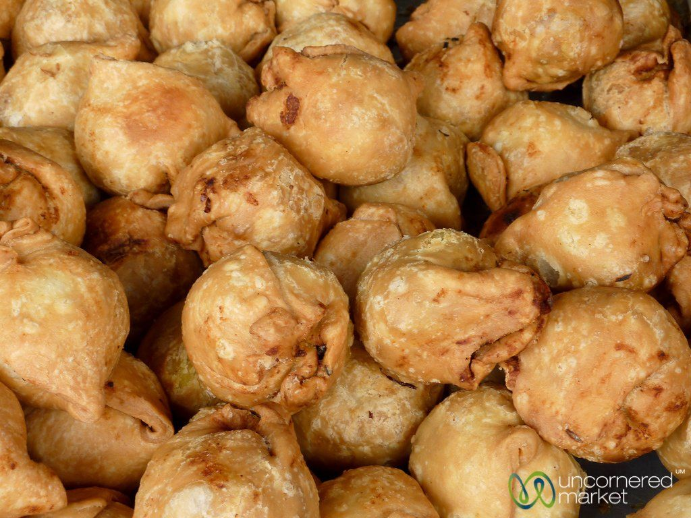
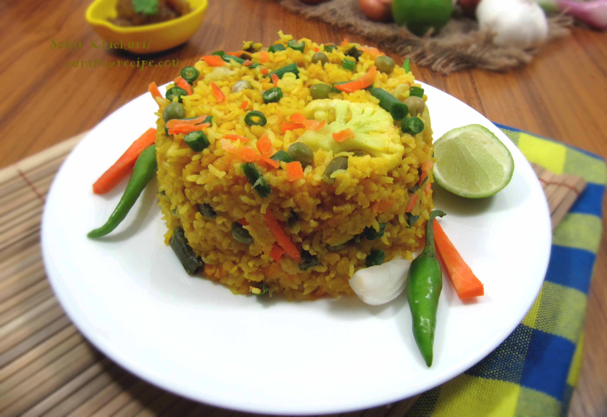
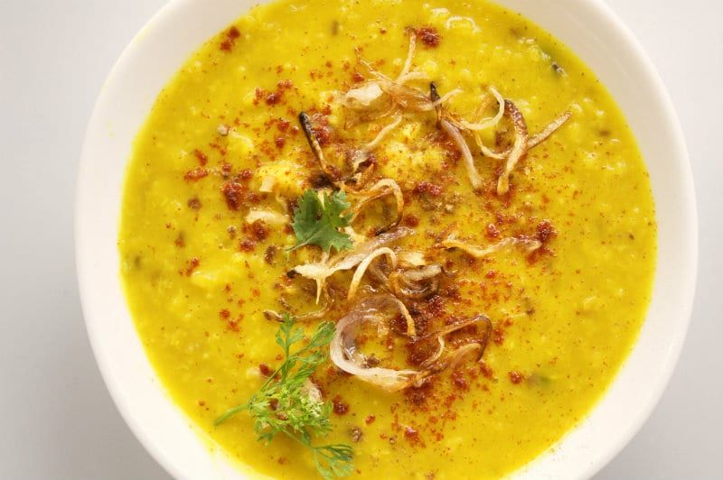
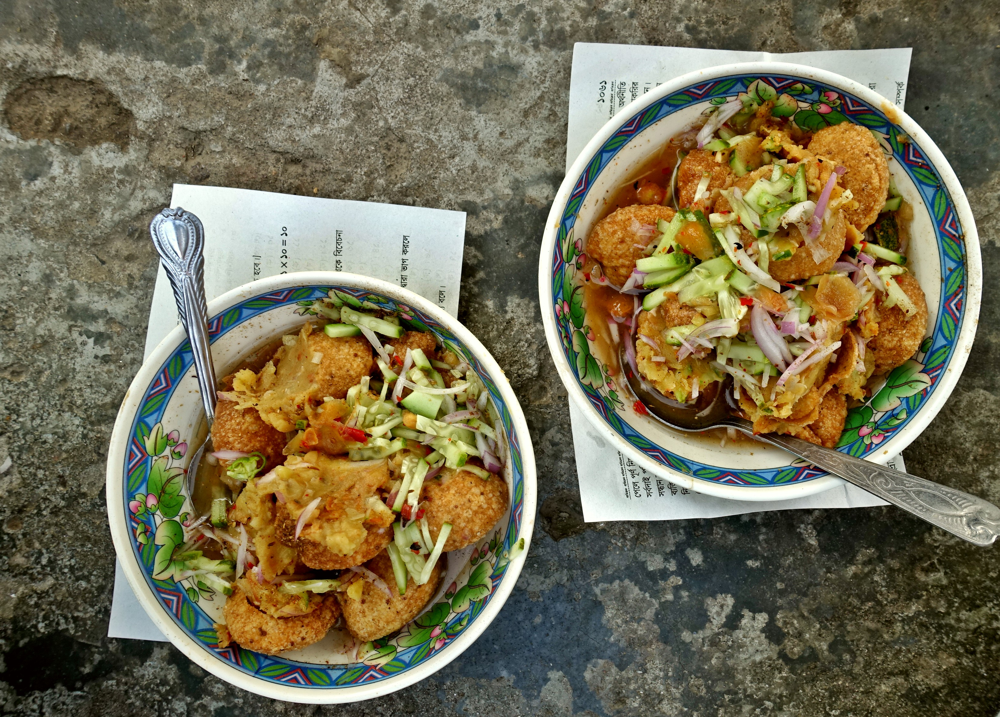
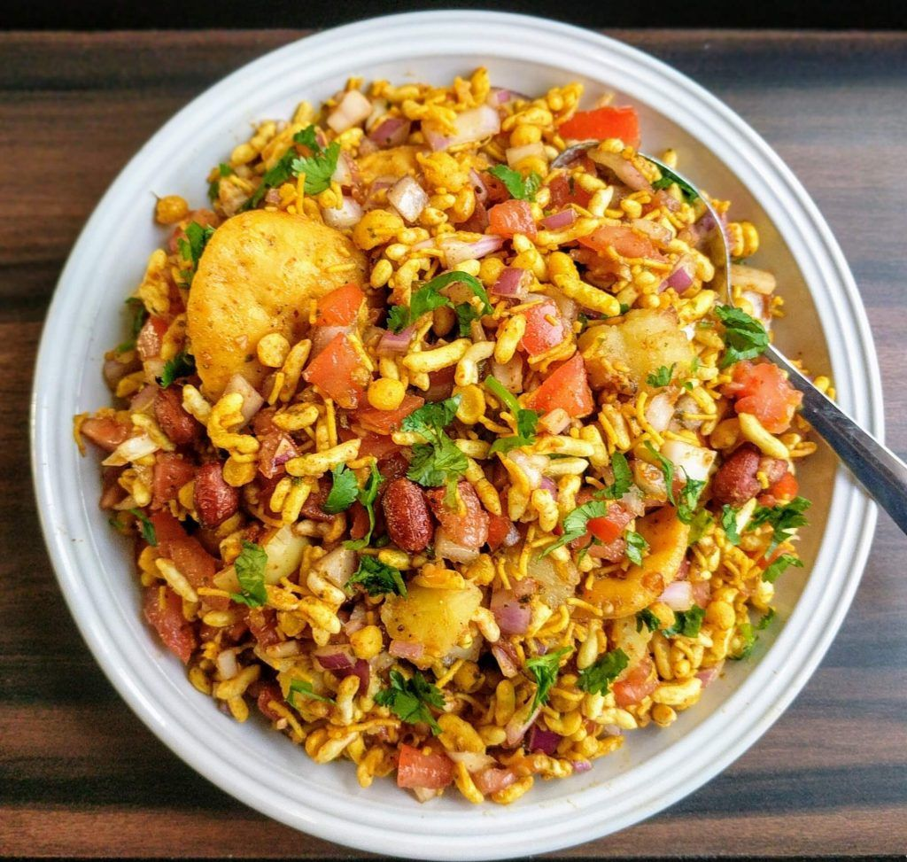

Introduction
Bangladeshi cuisine has over time been largely influenced by the Mughlai cuisine left behind by the Persian Rulers. This has led Bangladeshi cuisine to include many rich aromatic dishes such as biriyani and korma that requires the use of a large array of spices along with an extensive amount of ghee. Dhaka being the Mughal capital of the Bengal Subah (which includes the modern Bangladesh and the Indian states of West Bengal) was a major trading center in South Asia, so many culinary styles from around the world influenced the city's cuisine. After Dhaka became the capital of East Bengal, the Bangladeshi populace began to adopt the cuisine of the city with many unknown Persian, Turkish and Arabic-influenced dishes becoming popular.
Singara (Bangladeshi Most Popular Snacks)
Much like samosas, singara (the round items above) are spiced potato and vegetable mixture pockets wrapped in a thin dough and fried. What distinguishes a good singara is the flaky texture, almost as if it's made with savory pie crust. Singara are really tasty and inexpensive snack (as cheap as 24 for $1) that you can find almost anywhere in Bangladesh.

Paratha (Most Popular Bangladeshi Breakfast)
Paratha is a popular bread in Bangladesh which is made with baking flour. It is layered with the oil on a frying pan. In particular, Paratha is eaten in breakfast with Vaji, Lentil or fried eggs and it is very common in Bangladesh. The Nehari – a cooked beef shank items is also eaten with the Paratha. If you visit Bangladesh, you will find Paratha in every breakfast. Important to realize, people of Bangladesh also take Paratha with the desserts. On the other hand, you will find Ruti as the alternative of Paratha.

Kachchi Biriyani Most Favourite meal
Kachchi Biriyani is very delicious and featured food as the main dishes. It is served at the wedding or special party. It is made with special kinds of rice, meat, and potatoes. The named Kachchi comes for the cooking system. In general, the rice and meat are cooked with combination rather than cooking it separately. It is being served with the Salad and sometimes with the chutney. Though the use of Borhani is very common with the Kachchi – a special types of a yogurt drink. If you want to taste Bangladeshi food, you must try Kachchi Biriyani at least one time. Otherwise, you will miss the unique taste of main Bangladeshi dishes.
Bhuna Khichuri
You can cook Bhuna Khichuri as Browning – a particular type of mixing items with rice and lentil. It is the upgraded version of the Bangla Khichuri. Bhuna which is the similar meaning of braised. That means this is a slow cooked food mixing everything together and giving it time to bowl. You can’t understand the taste before eating it. Honestly, it is very delicious and good for eating as the main dishes. In the Bhuna Khichuri, the meet including chicken, beef or mutton (goat) is used with the food and cooked at a time. The Khichuri is served with the Salad, a small piece of onion or Lemon. When you are visiting Bangladesh, you should take the taste of Bhuna Khichuri because it is one of the authentic items in Bangladesh after Kachchi Biriyani.
Haleem
Basically, Haleem is a Lentil soap which is mixed with the spicy and meat (Beef, Mutton or Chicken meat). It is slow-cooked food with lentil, barley, and wheat. The meat is mixed or kept separately. It takes seven to eight hours to finish cooking. Even it is kept hot by slow cooking when it is served. You can eat Haleem with the Naan Roti or without Naan Roti. It is served with the fried onion, lemon, and minced meat. It is indeed a traditional food in Bangladesh, and you will find it in every restaurant. When you are coming to Bangladesh, you should taste it at least one time.
Fuchka (Most Popular Street Food)
Fuchka is very common, traditional and tasty food in Bangladesh. In general, it is street food, and you can find it in every area in Dhaka City or important tourist places in Bangladesh. It is prepared with the fried crisp and hollow puri. It is mixed with round and the particular type of flavored water. It is served in a plate. Important to realize, you will get the mixed taste of sweet and sour as like tamarind chutney. The food is very affordable and can be found on the street side of Dhaka City. Never forget to taste the Fuchka for getting the unique taste of it.
Jhal Muri
You will find Bhelpuri, and it is made with Fuchka Shells, vegetables and spices. It is distributed with the tamarind sauce. Jhalmuri is a portion of very popular street food, and you will find in most of the areas in Bangladesh. It is mainly produced with puffed rice with green chili and Ghumni. The lemon makes Jhalmuri tastier and adds flavor. At the same time, you will get different types of Achar in the street of Dhaka City, and it is very popular.Similarly, the Shrimp Kebab, Tikka Kebab with Parata is used as snacks, and it is made with spicy and very tasty. Whenever you come to Bangladesh, try to taste the street foods in Bangladesh. You will surely give awesome feelings.